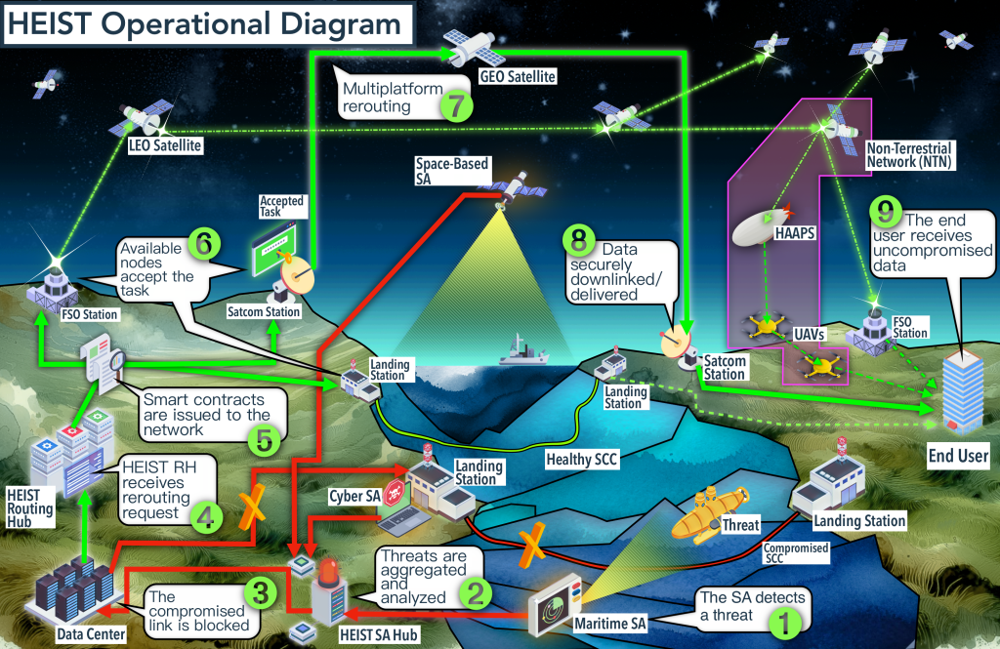

HEIST will result in augmented threat detection, fault diagnosis and communication resilience for SCCs. Currently, the absence of submarine situational awareness data fusion delivers sparse fault localization, whereas HEIST will achieve meter- range precision. Impaired SCCs suffer days of downtime due to physical inspection and repair, whereas HEIST’s rerouting protocol enabled by the heterogeneous space and submarine communications architecture reduces downtime to hours. Developing new satcom advanced technology in high bandwidth free-space optical links and non-terrestrial networks will facilitate last-mile connectivity. A successful project will yield HEIST’s technology transition enabled by our regulatory and policy framework to NATO and commercial operators.

The Hybrid Space and Submarine Architecture to Ensure Information Security of Telecommunications (HEIST) project is exceptionally timely, hence the end-user commitments from senior government and military officials in Iceland and Sweden. In recent years, the Alliance has explicitly raised awareness of the risk of hybrid threats, emphasizing a particular concern for communication infrastructure.
The active participation of Swedish institutions, especially in light of Sweden’s potential NATO accession, is of profound significance indicating HEIST’s security relevance. During this period of geopolitical tension with Russia and as an invitee to NATO, Sweden is particularly exposed. HEIST will enable Sweden and its NATO partners to be at the forefront of advanced technology, which will strengthen its power projecti in the Baltic Sea region and further demonstrate its tactical support for the Alliance. By incorporating Swedish expertise and strategic insights to submarine infrastructure threats, HEIST is not only responding to current needs but is preemptively preparing for the challenges posed by an expanded NATO territorial and tactical presence in the European High North and Baltic Sea.
Furthermore, the Icelandic researchers’ participation and the Icelandic government’s interest as an end-user provide a unique opportunity to test HEIST in a challenging real-world scenario. Iceland’s geological volatility constantly threatens its Submarine Communication Cables (SCCs), necessitating a robust, resilient communication system capable of withstanding natural disasters especially to ensure the human security and economic resilience of remote communities. The current volcanic eruption that has devastated Grindavik, Iceland is one example of the fragility of infrastructure when faced with natural disasters.
The HEIST architecture, with its advanced threat detection and diverse communication nodes, promises unprecedented connectivity redundancy, enhancing civilian security and military capabilities as recognized by the Icelandic Foreign Affairs Committee and the Swedish Naval Forces.
As the Russian cyber attack against Viasat’s KA-SAT satellite network during the first hours of its unprovoked invasion of Ukraine has demonstrated, the ability of military and civilian users to communicate is often the first target and casualty of war. Submarine communication cables (SCCs) present a perfect storm of challenges as they are exposed and vulnerable to both physical elements and digital adversaries. As a solution to foster redundancy and resilience of communication infrastructure, HEIST can immediately service real-world applications.
Physically, SCCs face a growing trend of incidents and threats against their integrity and operations. Notable examples of SCC malfunctions and damage are the ship mooring accidents in the Middle East and India in 2008, the faults caused by the 2011 Japanese earthquake, the 2019 cable fault in Tonga, the 2020 suspected sabotage of a subsea cable in the Red Sea affecting Yemen and neighboring countries, and the cable faults in Tonga and Svalbard in 2022. The most striking case, however, has been the 2022 sabotage of the North Stream II pipeline in the Baltic Sea. Given the rising tensions with the Russian Federation following the 2020 Ukraine invasion and the enlargement of NATO to Finland, SCC security and resilience is at considerable risk, especially given the absence of a dedicated monitoring system. Threats to SCCs affect not only their physical integrity but also the integrity, availability, and quality of the information shared among NATO military, institutional, and civilian users.
Cyber attacks and eavesdropping on submarine operations can severely compromise the confidentiality, integrity and availability of the communications. SCCs are particularly vulnerable to cyber attacks because of their homogeneous nature. First, there are fewer than five commercial providers of SCC operations available to work with the Alliance. Further, the software that manages the landing stations is dominated by even fewer providers. Given this weak supply chain, a cyber attack against one of these critical organizations could be devastating to the entire ecosystem of SCCs. HEIST transforms this operating model given it infuses heterogeneous communication architectures into the transnational communication ecosystem through its hybrid space and submarine approach. The move towards heterogeneous communication platforms provides a more challenging environment for an attacker to disrupt. A threat actor would need to strategically and simultaneously target all available communications platforms in the network for HEIST to be disrupted.
HEIST will address the security and tactical risks described while advancing the overall performance of communication networks in NATO and NATO partner countries. This is achieved by moving away from homogeneous operations for systems such as situational awareness and communications infrastructure, while advancing towards heterogeneous operating platforms that are more resilient to threats given their varied nature.
Developing a new integration framework for submarine situational awareness systems will provide NATO with a solution to the current lack of synchronized and integrated marine and submarine situational awareness. With the monitoring of hybrid threats, the HEIST Situational Awareness Hub will couple SCC-targeted physical surveillance with cyber attack detection. This capability will provide the Alliance with a multi-domain and multi-platform situational awareness architecture beneficial for its efforts of multi-national surveillance capabilities like the ones fostered by the current Digital Ocean Initiative. Such a system could be commercially adopted by SCC operators to independently monitor the status of their infrastructure. HEIST Routing Hub’s smart contracts within a distributed ledger-based hierarchical data routing system will be a transformative opportunity to safely integrate heterogeneous networks, enabling the security of the hybrid communication platform ecosystem previously described. This technology ensures a robust security framework for NATO’s multi-domain secure communications. Its decentralized nature enables secure and efficient data routing, enhancing information integrity and availability. Additionally, the ability to verify the validity of each contract at every node strengthens the network’s integrity, ensuring that only compliant and secure data reaches its intended destination.HEIST’s research on next-generation satellite technologies – including Free Space Optical (FSO) links, inter-satellite FSO links, microwave-range frequencies, and non-terrestrial 6G networks will provide a future-proof architectural framework. Its scalability of data handling and user capacity will make it highly scalable to commercial and civilian users, greatly enhancing human and economic security in under-served areas.
This site was created with the Nicepage